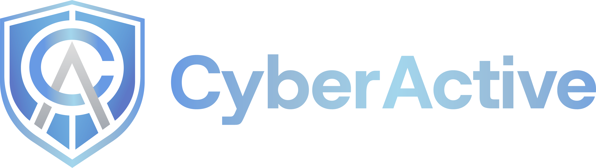

AI is accelerating enterprise innovation — and reshaping the threat landscape at the same time. Attacks now operate at machine speed, and infrastructure has grown too dynamic to manage through traditional operations alone. Freedom pairs next-generation AI infrastructure with CyberActive ADCR — Autonomous Data Center Resilience — and expert 24×7 SOC and NOC teams.
Adaptive intelligence. Autonomous operations. Continuous resilience.
Technology by
Autonomous agents now discover vulnerabilities, generate exploits, adapt to defenses and coordinate attacks faster than traditional security operations can respond. Freedom was engineered specifically for this reality.
Powered by CyberActive AI, the platform continuously learns the normal behavior of every system, workload, application and network across the facility. Rather than relying on static signatures, adaptive AI identifies unknown threats, predicts attack progression and orchestrates autonomous response before disruption spreads.
For decades, data centers have been procured on four variables: reliable power, cooling, connectivity and physical security. Those variables assumed a human adversary and a static workload. Neither assumption holds.
Freedom represents the next evolution of critical infrastructure — where operations, cybersecurity, business intelligence and resilience operate as one continuously learning ecosystem.
The future of critical infrastructure will not be defined by power, cooling or connectivity.
It will be defined by resilience.
Unlike facilities that treat operations and cybersecurity as separate disciplines, Freedom unifies them into a single intelligent ecosystem — autonomous AI working alongside expert 24×7 SOC and NOC teams to deliver machine-speed resilience with human oversight.
Autonomous Data Center Resilience (ADCR) is an AI-native operational framework that continuously protects, operates and optimizes every layer of the modern data center. Rather than reacting to isolated alerts, it correlates millions of operational, infrastructure, cybersecurity, cloud and business signals to understand the complete health of the environment in real time.
ADCR is built on proprietary autonomous AI developed specifically for cyber resilience — not assembled from third-party detection products.
Freedom is the convergence of digital infrastructure, autonomous AI operations and cyber resilience — not a colocation provider with a security product bolted on.
{{ p.line }}
Knowing where it will spread — and what it will impact — is what prevents business disruption. CyberActive continuously maintains a live operational dependency graph across the entire facility: every workload, application, network, storage platform, customer environment and business service.
Instead of chasing alerts, operators receive prioritized intelligence.
Adaptive intelligence applied across every operational system to maximize efficiency, reliability and availability — continuously, not quarterly.
Cyber resilience is no longer simply detecting threats. It is understanding how cyber events affect operations, infrastructure, customers and business outcomes — and acting accordingly.
Recovery begins the moment disruption is detected. Resurgent AI orchestrates restoration across applications, infrastructure, cloud, networking, storage, identity, databases, virtualization and business operations — every action prioritized by operational impact, customer experience and business value. Resilience means more than surviving an incident. It means continuing to operate through it.
{{ r.d }}
Freedom executes a closed-loop intelligence cycle, continuously, for as long as the facility is powered.
Production telemetry from the Sunrise campus. Adversaries now operate in milliseconds, which makes autonomous containment an operational requirement rather than a preference. Response executes inside policy your security leadership approves, supervised continuously by our NOC and SOC. Machines carry the speed; your organization retains control, evidence and the audit trail.
{{ dashRecommendation }}
CyberActive ADCR consolidates global threat telemetry, asset proximity, infrastructure dependency and machine reasoning into one system of record — the evidence layer behind every figure above.
The distinction is not a feature comparison. It is what your organization is exposed to in the ninety seconds after an AI-powered attack lands: whether anyone is watching, how quickly containment executes, and what that interval costs in revenue, penalties and reputation.
A live model of Hall A — every rack, GPU cluster, cooling loop and customer environment, continuously modeled and reasoned about. Walk a containment sequence the platform has already executed in production, or select any rack to review its health, dependencies and business impact.
Modern infrastructure can no longer be managed through disconnected tools and isolated teams. Freedom correlates telemetry across every operational domain into a continuously evolving understanding of operational health, cyber risk, infrastructure performance and business impact.
{{ audienceLead }}
Freedom is building a generation of intelligent infrastructure where autonomous operations, adaptive cybersecurity, business intelligence and continuous recovery converge into one unified platform. This is more than the future of the data center — it is the future of operational and cyber resilience.
{{ v.d }}
Our mission is to eliminate downtime as a category of business risk — redefining how the world's digital infrastructure is operated, protected and recovered through autonomous artificial intelligence.
Ninety minutes on the floor with our engineering leadership, under NDA — AI factory halls, liquid-cooled GPU rows, and the NOC and SOC observing autonomous containment against live traffic. Bring your continuity requirements, your auditors’ questions and your density roadmap. Commercial terms can be executed the same day.
Indicative figures pending final campus specification.
Reach the right team directly. Every inquiry is routed to a named owner at the Sunrise campus — not a shared queue.
Ninety minutes on the floor under NDA — the AI factory halls, the GPU rows and the SOC watching autonomous containment against live traffic.
Reserve a tour{{ modal.lead }}